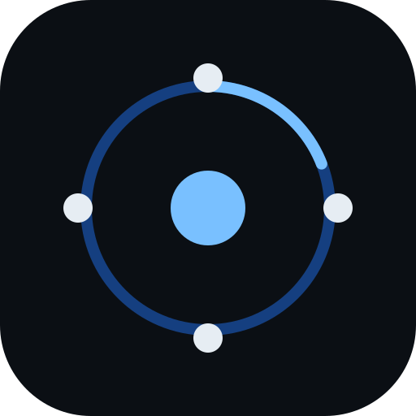

Browser AI Runtime
完全クライアントサイドの自己成長型 AI 実行基盤（研究プロジェクト）
Phase 2a
›
Cognitive Core（次文字予測）＋ 学習ループの閉じ（驚きで記憶）
いまここ
Phase 1
›
Representation ＋ Memory Fabric（学習・記銘・想起・忘却）
合格
Phase 0
›
技術検証: GPU 学習ループ ＋ 永続化/復元
合格